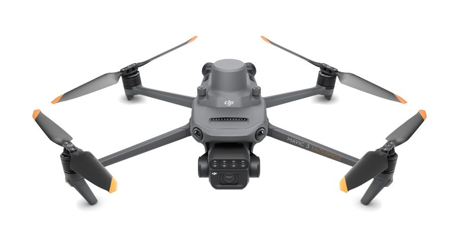
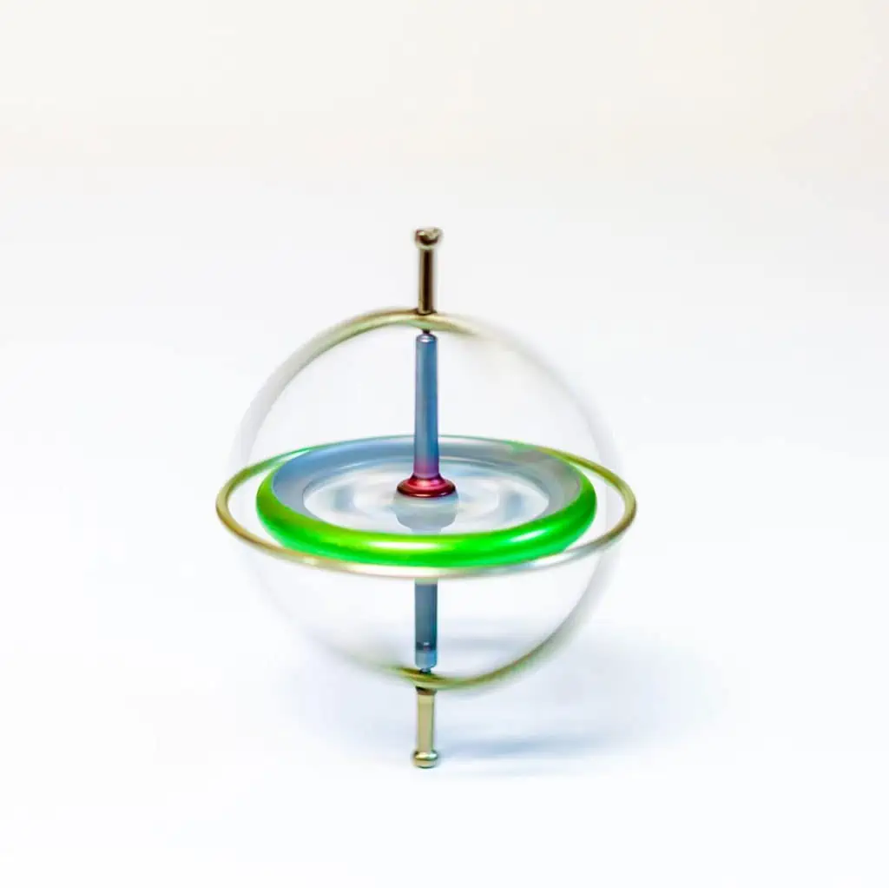

Research Interests
UAVs, robotics, Embedded systems, human-computer interaction, sensor integration, and applied AI systems.
I design and build engineering systems that combine electronics, embedded firmware, communication protocols, sensors, simulation, and software tools. This portfolio presents selected projects with clear documentation, technical architecture, results, and design decisions.
I am a research-focused engineering student interested in robotics, UAV systems, embedded software and hardware, control systems, and intelligent automation. My work focuses on designing practical systems that combine hardware, software, sensors, communication, and real-world testing.
UAVs, robotics, Embedded systems, human-computer interaction, sensor integration, and applied AI systems.
Hardware design, firmware development, communication protocols, PCB design, simulation, desktop software tools, and system integration.
This site documents selected projects for graduate supervisors, recruiters, collaborators, and anyone interested in my engineering work.
Click any project to open a dedicated page with the full technical description, architecture, media, and project details.

A custom-built gaming grade mouse and receiver ecosystem featuring NRF5340 wireless communication, Enhanced ShockBurst, PAW3395 motion sensing, NPM1300 battery management, and a dual-MCU NRF5340 plus LPC55S28 high-speed USB dongle.

A personal quadcopter control project using an Arduino Due, MPU6050 IMU, 915 MHz remote control receiver, telemetry transmitter, BLDC motors, ESCs, and a 3-DOF gimbal test bench for safe controller testing. A cascaded PI-PI controller was implemented and validated through live bench testing.

A custom STM32F401-based smart thermostat designed for Fresh Air Handling Unit automation, replacing costly wired RS485 thermostat networks with 2.4 GHz wireless communication, mesh networking, local manual control, and cloud-based centralized scheduling through MQTT.

A personal embedded robotics project implementing the Madgwick orientation filter on an STM32F401 using MPU9250 accelerometer, gyroscope, and magnetometer data. The computed roll, pitch, and yaw angles are sent to a PC through USB virtual COM port and visualized in Processing as a moving 3D rectangular body.
Download or view my CV for education, research interests, technical skills, selected projects, and contact information.
Interested in my projects, research work, or possible collaboration? You can contact me using the links below.